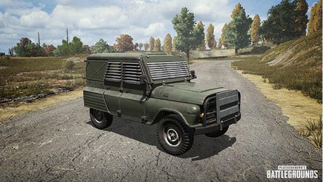

HOME
JEEP
ARTISAN BAKERY LOGO
BOUNCY
MOTORBIKE

Jeep
JEEP(中文名：吉普) 世界上第一辆Jeep越野车是1941年在二战中为满足美军军需生产的。至今已具有78年历史。 吉普车是运输兵力跟补给的顶级首选车辆。既能快速增援，也能快速撤退，在绝地求生，刺激战场等中都有存在。深受玩家的喜爱。 吉普是打架，追空投，追汽车，堵桥的最佳车辆。一旦拥有了它，你将走上人生巅峰!!!